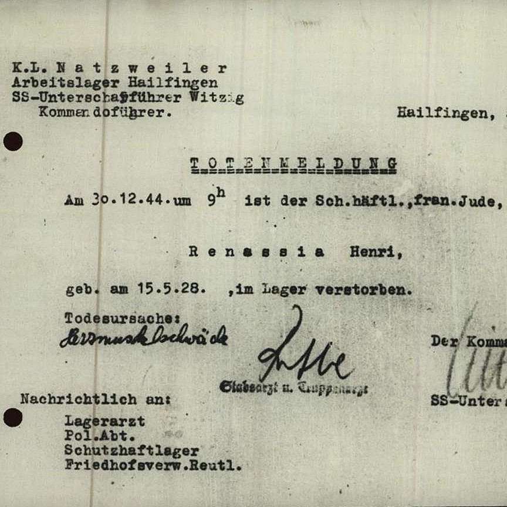

Portrait d’archive
Henri Sauveur Renassia
Henri Sauveur RENASSIA
Henri Sauveur RENASSIA est né le 15/05/1928 à Lyon en France.
Rassemblé à Drancy, il est déporté à Auschwitz le 20/05/1944 par le convoi n°74. Il est mort en déportation le 25/05/1944. Il avait 16 ans.
Déporté avec son père Gabriel (10/01/1887, Constantine) et sa mère Rachele (07/12/1885, Constantine). Déclaré officiellement "mort en déportation" au JO n°290 du 14/12/1997.
Dernière adresse connue : 1, rue des Gatines (Paris)
Nom : RENASSIA
Prénom(s) : Henri Sauveur
Date naissance : 15/05/1928
Âge (ans) : 15
Lieu naissance : Lyon 07
Pays ou département : Rhône
Lieu rassemblement : Drancy
Dernière adresse : 1, rue des Gâtines
Ville : Paris
Code postal : 75020
N° Convoi : 74
Date déportation : 20/05/1944
Informations diverses : Fils de Gabriel (10/01/1887, Constantine, Algérie) et de Rachele née Guedj (07/12/1885, Constantine, Algérie) et frère de Raymond Abraham Renassia (né le 24/01/1920 à Bône, Algérie), Henri Renassia est né le 15/05/1928 à Lyon. Ces parents sont de profession tailleurs. La famille s’installe à Paris où ils habitaient au 108, Quai de Jemmapes à Paris 10ème. Henri est scolarisé à l’École des Récollets à Paris 10ème. Sa dernière adresse connue est 1, rue des Gâtines (Paris).
Il a été déporté le 20/05/1944 avec ses parents par le convoi 74 de Drancy à Auschwitz (matricule N° A 5281). Le convoi est arrivé le 23/05/1944 (Source: Danuta Czechs Auschwitz-Kalendarium S. 782). Le 28.10.1944, Henri est transféré de Auschwitz au Stutthof (un camp près de Gdansk, Pologne) (matricule N° 100 034) puis en Novembre 1944 à Hailfingen (Meurthe-et-Moselle), camp annexe du KL-Natzweiler-Struthof (Matricule N°40 864), où il meurt le 30/12/1944. Son corps a été brulé au crématoire du cimetière Unter den Linden (Sous les tilleuls) de Reutlingen (près de Stuttgart) où ses cendres sont enterrées. Une plaque mémorielle a est apposée en 2010 et porte son nom. Source: Volker Mall Jüdische Häftlinge (Die Häftlinge des KZ-Außenlagers Hailfingen/Tailfingen).
Renassia (Henri, Sauveur), né le 15 mai 1928 à Lyon (7e) (Rhône), décédé le 25 mai 1944 à Auschwitz (Pologne) et non le 20 mai 1944 à Drancy (Seine). JO
Renassia (Gabriel, Paul), né le 10 décembre 1887 à Constantine (Algérie), décédé le 25 mai 1944 à Auschwitz (Pologne) et non le 20 mai 1944 à Drancy (Seine). Renassia, née Guedj (Rachel) le 7 décembre 1885 à Constantine (Algérie), décédée le 25 mai 1944 à Auschwitz (Pologne) et non le 20 mai 1944 à Drancy (Seine).
Lieu de déportation : Auschwitz
Lieu de départ : Drancy
Nombre total de déporté·e·s du convoi : 1200
Gazé·e·s à l'arrivée : 904 (75,3 %)
Survivant·e·s en 1945 : 166 (13,8 %)